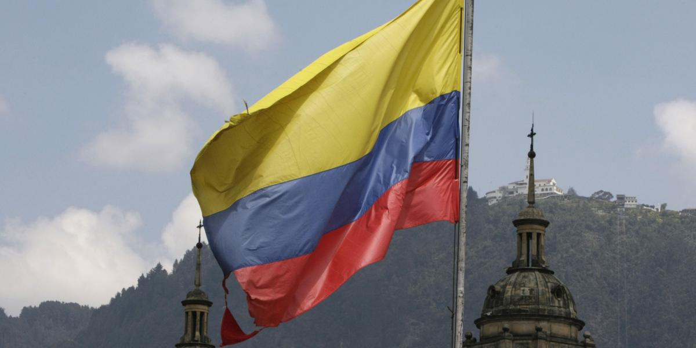

NOTICIAS DE COLOMBIA Y SUS PRINCIPALES CIUDADES

Bienvenido a nuestro portal de noticias, un espacio donde podrás encontrar la información más relevante de las principales ciudades de Colombia. Aquí reunimos la actualidad de lugares como Bogotá, Medellín, Cali, Barranquilla y Bucaramanga, ofreciéndote una visión completa de lo que sucede en cada región. Nuestro objetivo es mantenerte informado con noticias claras, actualizadas y confiables sobre política, sociedad, cultura, deporte y los eventos que marcan el día a día de cada ciudad. Creemos en la importancia de estar conectados con lo que ocurre en todo el país, para que siempre estés al tanto de la realidad colombiana. Explora cada sección y descubre cómo se mueve Colombia ciudad por ciudad, con información pensada para ti. Trabajamos con responsabilidad, ética y compromiso social, contribuyendo al crecimiento económico y al bienestar de la comunidad.